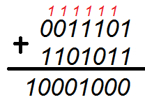
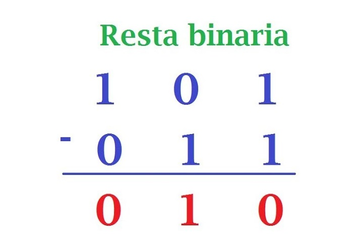
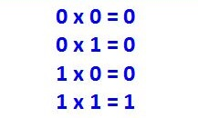

Suma binaria.
Para sumar 2 números binarios es muy sencillo solo deberemos seguir 4 reglas
1. 1+1 = 0 quedando 1 como acarreo
2. 1+0 = 1 quedando 0 como acarreo
3. 0+1 = 0 quedando 0 como acarreo
4. 0+0 = 0 quedando 0 como acarreo
Siguiendo estás reglas si queremos sumar los 2 números binarios 10 + 11 su metodo será de la misma manera en que sumariamos 2 decimales.
0+1 = 1
1+1 = 0 y el de acarreo 1
10+11 = 101.

resta binaria
Restar 2 números binarios es muy sencillo, la resta se ejecuta de la misma forma en que se resta 2 números decimales.
1. 1 - 0 = 1
2. 0 - 0 = 0
3. 1 - 1 = 0.
4. 0 - 1 = 1
Si restaremos 11 - 10 el resultado sería 01 o 1

Multpilicacion binaria
Multiplicar 2 números binarios es muy sencillo, la multiplicacion se ejecuta de la misma forma en
que se multiplica 2 números decimales.
1. 1*0 = 0
2. 0*0 = 0
3. 1*1 = 0.
Si multiplicaremos 11*10 el resultado sería 110

División binaria
Dividir 2 números binarios es muy sencillo, la division al igual que los metodos
anteriores se ejecuta de la misma forma en que se divide 2 números decimales.
Si dividimos 11/11 el resultado sería 1
Si dividimos 100/10 el resultado sería 10.